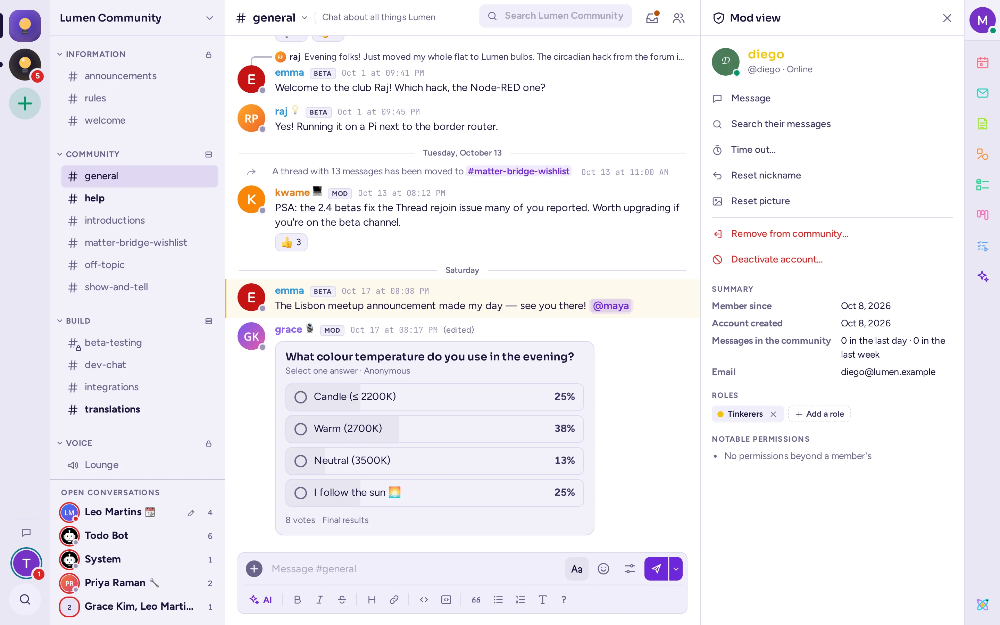

الإشراف
الأدوات التي يوفرها Antimatter للمشرفين، وما تفعله كل أداة وما لا تفعله، وكيفية استخدامها معاً للحفاظ على مجتمع مريح.
من يمكنه الإشراف
يمكن لمديري المجتمع استخدام كل الأدوات في هذه الصفحة، على أي شخص باستثناء المديرين الآخرين. يحتاج الآخرون إلى دور بالصلاحيات المناسبة (انظر الأدوار والصلاحيات):
- استخدم إدارة الرسائل لتعديل رسائل الآخرين وحذفها، ولتثبيت الرسائل في أعلى القنوات أو إزالتها منها؛
- إزالة أشخاص لإيقاف أشخاص مؤقتًا وإزالتهم من الفريق؛
- إدارة الأدوار لمنح الأدوار وسحبها.
يمنح أيٌّ من هذه الخيارات الثلاثة وصولاً إلى عرض المشرف. لا يمكن للمشرفين الذين لديهم صلاحية إزالة أشخاص إلزام الأشخاص بالانتظار مؤقتاً إلا إذا كانت أدوارهم الأعلى أدنى من أدوار المشرفين.
عرض الإشراف
يجمع عرض المشرف كل ما تحتاج إلى معرفته عن شخص واحد، والإجراءات التي يمكنك اتخاذها. لفتحه، افتح بطاقة الملف الشخصي للشخص المعني واختر زر الدرع في الزاوية العلوية اليمنى، أو انقر بزر الماوس الأيمن على اسمه واختر عرض المشرف. يُفتح العرض في اللوحة اليمنى.
تحت اسم العضو وحالته (مثل الإيقاف المؤقت إن وُجد)، تظهر الإجراءات المسموح بها، كلٌّ مرة واحدة: رسالة، البحث في رسائلهم، إيقاف مؤقت… (أو إزالة الإيقاف المؤقت)، ثم باللون الأحمر إزالة من الفريق…، وللمديرين على مستوى النظام إلغاء تفعيل الحساب…. الإجراءات الحمراء تطلب تأكيدًا أولاً. تحتها:
- ملخص: تاريخ انضمامهم إلى الفريق (عضو منذ)، وتاريخ إنشاء حسابهم، وعدد الرسائل التي نشروها في الفريق خلال اليوم الماضي والأسبوع الماضي.
- الأدوار: أدوارهم داخل الفريق. إذا كان لديك صلاحية إدارة الأدوار، انقر على إضافة دور واختر أحد الأدوار التي لا يمتلكونها، أو أزل دورًا بالضغط على ×.
- الصلاحيات الرئيسية: ما يمكنهم فعله بخلاف العضو العادي، مثل إدارة الرسائل أو إيقاف الأعضاء مؤقتًا وإزالتهم.
- إعادة تعيين اللقب وإعادة تعيين الصورة: تُستخدمان إذا كان العضو قد حدد لقبًا أو صورةً للفريق تخالف قواعده. يمكنك إعادة التعيين فقط، ولا يمكنك تعيين قيمة جديدة بنفسك.
الحساب الجديد الذي ينشر كثيراً في يومه الأول علامة نموذجية على الرسائل المزعجة: يظهر ذلك في الملخص على الفور.

الإيقاف المؤقت
يوقف الإيقاف المؤقت شخصاً عن المشاركة لفترة مؤقتة، دون إزالته. أثناء الإيقاف المؤقت، يمكنه قراءة قنوات المجتمع، لكنه لا يستطيع إرسال الرسائل أو إضافة ردود الفعل أو إرفاق الملفات أو الإشارة إلى أشخاص هناك. تبقى رسائله المباشرة مفتوحة.
- من عرض المشرف أو من قائمة العضو (بالنقر بزر الماوس الأيمن على اسمه)، اختر إيقاف مؤقت….
- اختر المدة: 60 ثانية، 5 دقائق، 10 دقائق، ساعة واحدة، يوم واحد أو أسبوع واحد.
- اختياريًا، اكتب السبب للمشرفين الآخرين.
- اختر إيقاف مؤقت.
يرى الشخص رسالة «تم إيقافك مؤقتًا حتى…» بدلاً من صندوق الرسائل، حتى انتهاء مدة الإيقاف. كما لا يستطيع الانضمام إلى قنوات الصوت والمكالمات الخاصة بالمجتمع أو إعادة الانضمام إليها. يرى الجميع وسم موقوف مؤقتًا بجانب اسمه في قائمة الأعضاء، وفي نهاية مدة الإيقاف على بطاقة ملفه الشخصي.
تنتهي مدة الإيقاف مؤقتًا من تلقاء نفسها. لإنهائها قبل ذلك، اختر إزالة الإيقاف المؤقت من عرض المشرف أو من قائمة الشخص. يستبدل الإيقاف المؤقت الجديد الإيقاف السابق. إزالة شخص ما من المجتمع لا تمسح إيقافه المؤقت: إذا عاد قبل انتهاء المدة، يبقى موقوفًا مؤقتًا. لا يمكن إيقاف مدراء المجتمع مؤقتًا.
إزالة شخص ما من المجتمع
من عرض المشرف أو من قائمة العضو (بالنقر بزر الماوس الأيمن على اسمه)، اختر إزالة من الفريق… ثم أكّد الإجراء. سيغادر العضو جميع قنوات الفريق ويفقد أدواره فيه، بينما تبقى رسائله. لن يتم إخباره بسبب الإزالة؛ ببساطة سيختفي الفريق من شريطه الجانبي.
يمكن للشخص المُزال العودة بدعوة جديدة، أو فورًا إذا كان المجتمع عامًا. إذا لم يُفترض أن يعود، اجعل المجتمع خاصًا وأعد توليد رابط دعوته (انظر من يستطيع الانضمام)، أو راجع منع شخص ما من الدخول.
لإزالة شخص ما من قناة واحدة فقط، انقر بزر الماوس الأيمن على اسمه واختر إزالة من القناة، أو اكتب /kick @username في تلك القناة. لا يكون هذا ممكنًا عندما يكون جميع أعضاء المجتمع في كل قناة.
منع شخص ما من الدخول
لا تحتوي Antimatter على قائمة حظر. خياراتك، من الأخف:
- إيقاف مؤقت لمدة تصل إلى أسبوع.
- إزالة الشخص، مقترنةً بمجتمع خاص أو برابط دعوة جديد.
- تعطيل حسابهم، وهو إجراء يقوم به مدير النظام من عرض المشرف أو من وحدة التحكم بالنظام. يُسجَّل خروجهم من كل مكان ولا يستطيعون تسجيل الدخول مرة أخرى حتى يعيد مدير النظام تفعيلهم. ينطبق هذا على الخادم بأكمله، وليس على مجتمعك فقط، لذا يُقصد به المزعّمون وحالات الإساءة الجسيمة.
حذف الرسائل وتحريرها
باستخدام إدارة الرسائل (أو بصفة مدير المجتمع)، افتح قائمة ⋯ الخاصة بالرسالة واختر حذف. يؤدي حذف الرسالة إلى إزالتها لدى الجميع، مع ردودها، ولا يمكن التراجع عن ذلك. يمكن لمدراء المجتمع الحذف، لكن لا يمكنهم، افتراضيًا، تحرير رسائل الآخرين؛ بينما يمكن لدور يحمل صلاحية إدارة الرسائل القيام بكلتا العمليتين.
تثبيت الرسائل في الأعلى هو بيد المشرفين: فقط مديرو القناة، ومديرو الفريق، والأشخاص الذين لديهم صلاحية إدارة الرسائل يمكنهم تثبيت الرسائل في الأعلى أو إزالتها باستخدام إزالة من الأعلى، مما يمنع الأعضاء من إزالة إعلاناتكم. أما التثبيت العادي (Pins) فهو متاح للجميع: أي شخص يمكنه قراءة القناة يمكنه تثبيت الرسائل وإلغاء تثبيتها. راجع الرسائل المثبتة في الأعلى.
لا يوجد وضع بطيء. لتهدئة قناة مشحونة، قيّد من يمكنه النشر فيها لفترة مؤقتة باستخدام أذون القناة (راجع أذون القناة)، أو عاقِب الأشخاص المعنيين.
التقارير
عند تفعيل ميزة الإبلاغ في الخادم، يمكن للأعضاء الإبلاغ عن رسالة عبر الإبلاغ عن الرسالة في قائمة ⋯ الخاصة بها. يختارون سببًا ويضيفون تعليقًا. تُخفى الرسالة عن القناة أثناء مراجعتها، ويحصل المراجعون عليها في رسالة مباشرة من بوت، مع أزرار إزالة الرسالة والاحتفاظ بالرسالة.
الإبلاغات معطلة افتراضيًا، ولا يمكن لمدير النظام فقط تفعيلها، في وحدة التحكم بالنظام › إعدادات الموقع › معالجة تسرب البيانات. هناك يختار مدير النظام:
- المراجعين: نفس الأشخاص لكل مجتمع، أو مراجعون لكل مجتمع، وهل يقوم مدراء المجتمع ومدراء النظام بالمراجعة أيضًا (مدراء المجتمع يقومون بذلك افتراضيًا)؛
- قائمة الأسباب التي يمكن للناس اختيارها؛
- هل يجب على المُبلّغين والمراجعين إضافة تعليق، وهل تُخفى الرسالة أثناء مراجعتها.
تأتي هذه الميزة من استخدامات الامتثال، وأسبابها الافتراضية ("عدم تطابق التصنيف"، "انتهاك الحاجة إلى المعرفة" وما إلى ذلك) مكتوبة للمؤسسات التي تتعامل مع معلومات حساسة. لمجتمع عام، اطلب من مدير النظام استبدالها بأسباب مثل "إزعاج"، "تحرش" أو "خارج الموضوع"، وتعيين مشرفيك كمراجعين: امتلاك صلاحية إدارة الرسائل لا يجعل شخصًا ما مراجعًا.
التجاهل والحظر
يمكن للأعضاء حماية أنفسهم دون مشرف، من القائمة على اسم شخص ما:
- تجاهل: لا إشعارات من ذلك الشخص، تُطوى رسائله، وتنتظر رسائله المباشرة كطلبات رسائل.
- حظر…: نفس الشيء، ولا يمكنهم مراسلتك أو بدء رسالة جماعية معك. لا يُبلّغون بذلك.
في إعداداتهم، ضمن الخصوصية والأمان، يختار كل شخص ما إذا كانت الرسائل المباشرة من أشخاص لم يتواصل معهم بعد تصل بشكل طبيعي (قبول من الجميع)، أو تنتظر كطلبات رسائل (اسألني أولاً)، أو تُرفض تمامًا (رفض). هذا خيار افتراضي لكل فرق العمل، ويمكنهم تجاوزه لهذا الفريق المحدد من خلال إعدادات الخصوصية في قائمة الفريق. هذا خيار شخصي: لا يمكن لمديري الفريق ضبطه لأعضائهم.
ما يجب على المشرفين معرفته:
- الحظر لا يمنع أي شخص من النشر في قنوات المجتمع. إنه فقط يطوي رسائل الشخص المحظور بالنسبة لمن حظره. إساءة الاستخدام داخل القنوات لا تزال تتطلب تدخّل مشرف.
- يمكن للأعضاء تجاهل أو حظر المشرفين وإداريي المجتمع أيضاً. قد تصل رسالة مباشرة من مشرف كطلب صامت، أو تُرفض. فقط إداريي النظام والبوتات يصلون دائماً. لإرسال تحذير مهم، انشر في قناة يمكن للشخص قراءتها، أو اطلب من إداري النظام.
- يمكن لمدير النظام تعطيل كل هذا للخادم عبر تفعيل التجاهل والحظر وطلبات الرسائل في وحدة التحكم بالنظام › إعدادات الموقع › المستخدمون والفِرَق، لمواقع العمل التي يجب أن يكون فيها الزملاء متاحين دائمًا.
المكالمات والقنوات الصوتية
من يمكنه الإشراف على مكالمة: مضيفها، مديرو الفريق، مديرو القناة ومديرو النظام. في القنوات الصوتية، يمكن للمشرفين الذين لديهم إدارة الرسائل، إزالة أشخاص أو إدارة الأدوار أيضًا. لا تحتاج إلى أن تكون في المكالمة بنفسك.
انقر بزر الفأرة الأيمن على بلاطة أو صف مشارك لفتح قوائمهم:
- كتم: يكتمهم مرة واحدة؛ يمكنهم إلغاء الكتم بأنفسهم.
- كتم الصوت لهذه المكالمة: يبقى الصوت مكتومًا حتى تسمح بذلك، حتى لو غادروا المكالمة ثم عادوا إليها. يظهر على ميكروفونهم تم كتم الصوت بواسطة مشرف. يستمر الكتم لمدة 10 دقائق بعد مغادرتهم المكالمة أو انتهائها، فلا يمكن التحايل عليه عبر المغادرة والعودة. يُرفع الكتم عند استخدام السماح بإلغاء الكتم.
- طلب إلغاء الكتم: يطلب من شخص مكتم أن يتحدث. يرى الطلب ويختار إلغاء الكتم أو عدمه. يمكنك طلب ذلك من نفس الشخص مرة أخرى بعد 20 ثانية.
- خفض اليد و إيقاف مشاركة الشاشة.
- طرد من القناة الصوتية أو إزالة من المكالمة: يفصلهم. يمكنهم العودة فوراً؛ لإبقائهم خارجاً، عاقبهم بإيقاف مؤقت.
يمكنك فقط كتم الأشخاص الذين هم أدنى منك في الرتبة: مضيف المكالمة أدنى من مشرف القناة الصوتية، الذي هو أدنى من إداري القناة، ثم إداري المجتمع، ثم إداري النظام.
يمكن للمضيف ومديري النظام أيضًا اختيار تعيين كمضيف من قائمة شخص ما، لمنحه ضوابط المضيف.
إنهاء مكالمة للجميع
يؤدي إنهاء المكالمة إلى خروجك منها فقط. لإنهائها للجميع، استخدم بطاقة المكالمة في المحادثة: بمجرد خروجك من المكالمة، تعرض البطاقة إنهاء المكالمة للجميع بجانب انضمام. يظهر هذا الخيار لمن بدأ المكالمة (باستثناء القنوات الصوتية) ولمشرفي المكالمة. أكّد الإجراء بالضغط على إنهاء المكالمة: سيتم قطع الاتصال عن الجميع الذين لا يزالون في المكالمة، وتنتهي المكالمة.
المتابعة
لا يوجد سجل إشراف في المجتمع. تُسجَّل الإيقافات المؤقتة والإزالات والإجراءات الأخرى في سجل التدقيق الخاص بالخادم، والذي يمكن فقط لإداريي النظام قراءته. احتفظ بسجل خاص بك في قناة خاصة للمشرفين: من تم إيقافه مؤقتاً أو إزالته، ومتى، ولماذا.
الممارسات الجيدة للمجتمعات العامة
- دوّن القواعد. ضع القواعد في إعدادات الفريق › الترحيب والقواعد، ليوافق الأعضاء عليها قبل نشر الرسائل (راجع القواعد)، ولخّصها في نص الترحيب الخاص بالانضمام.
- أبقِ النوع مضبوطًا على «فريق» (إعدادات الفريق › عام)، ليتمكن فقط المشرفون والمديرون الذين لديهم صلاحية إدارة القنوات من أرشفة القنوات.
- حدّد ما يمكن للأعضاء الجدد فعله. اطلب من مدير النظام الخاص بك مخططًا للصلاحيات لفريقك بحيث لا يتمكن الأعضاء من إعادة تسمية القنوات أو إدارة أعضائها، وهو إجراء يسمح به الإعداد الافتراضي.
- أنشئ دورًا للمشرفين مع صلاحيات إدارة الرسائل وإزالة أشخاص، واعرضه بشكل منفصل ليعرف الأشخاص من يجب عليهم التواصل معه؛ يتضمن دور «المشرفون» في قوالب التخطيط كلتا الصلاحيات. احتفظ بقناة خاصة للمشرفين.
- تصاعد تدريجياً: كلمة في القناة، رسالة مباشرة، إيقاف قصير، إيقاف أطول، إزالة، ثم تعطيل بواسطة مدير النظام في حالات الإزعاج أو سوء الاستخدام.
- راقب الحسابات الجديدة. يعرض عرض المشرفين متى تم إنشاء الحساب وكم نشر. من الأسهل إيقاف موجة من الحسابات الجديدة في مجتمع خاص مع إعادة توليد رابط الدعوة.
- فعّل البلاغات مع مراجعين هم مشرفوك، وأسباب تناسب مجتمعك.
- اعرف الحد الأقصى لعدد الأعضاء في خادمك. لا توجد حدود افتراضية للمجتمعات، لكن يمكن لمدير النظام تعيين حد؛ إذا كان خادمك كذلك، فاطلب منه رفع الحد قبل بلوغه.